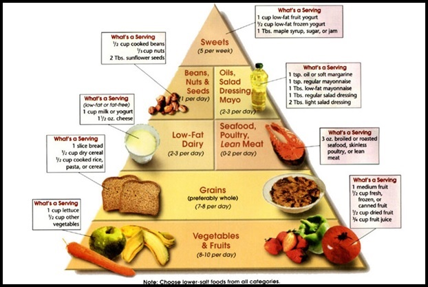
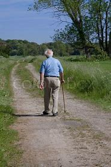
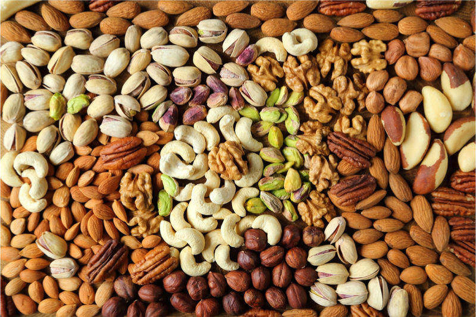
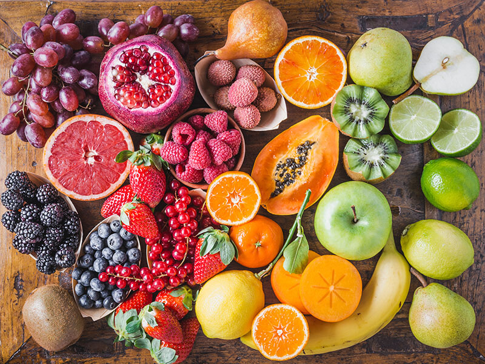
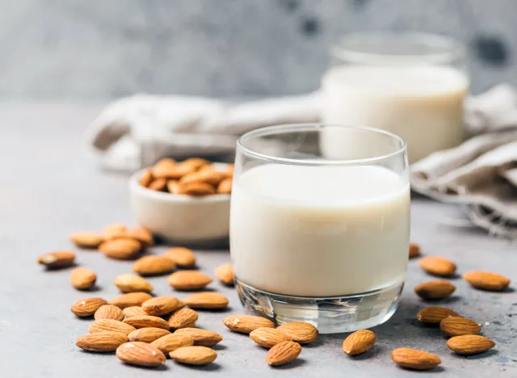

click hear for Information:
diet plain
REGULAR DIET ROUTINE
Follow this diet regularly,it helps you to increase your health and manitin a good healthylife

EXERCISES
- RUNNING

- Improves heart health. For seniors, walking offers numerous heart health benefits. Getting your heart rate up daily...
- Lowers blood sugar. After eating, taking a 15-minute walk has been shown to reduce the after-eating spike in blood sugar...
- Reduces pain. Studies have shown that walking helps reduce some pain due to chronic conditions like arthritis. Some...
- Low participation cost. After you've invested in a good, sturdy pair of shoes, you can walk basically...
- YOGA
-
Yoga helps to reduce positive pressure (atmospheric) and increase negative pressure (anti-atmospheric) thus good for prostate glands.
- Some researches reveal that yoga reduces urinary acidity and uropepsin.
- Practicing yoga has a significant contribution to the reduction of high blood pressure, heart rate, and coronary problems.
- Yoga diminishes the activity of Reactive Oxygen Species (ROS) i.e., oxygen-free radicals thereby decreases neurogenerative disorders, oncogene activation, and chances of diabetes and so many health disorders.
Yoga literature suggests filling 50% of the stomach with solid food (rice, chapatti, vegetables, etc.), 25% with water, and the remaining 25% should be kept empty for healthy living.
PROTIEN RICH FOOD
FOOD PLAY THE MAJOR ROLE TO MAINTAIN HEALTHY LIFE
NUTS

-
Nuts have been proven to be not only a great aphrodisiac but also work as a heart disease decreaser. They lower the risk of heart disease by 28%.
Now, you don't need to buy the most expensive nuts. Simple peanuts will do the job, and they are almost two times cheaper than any other tree nuts.
fruits

-
Fruits are low in calories and fat and are a source of simple sugars, fiber, and vitamins, which are essential for optimizing our health.
- Fruits provide plenty of soluble dietary fiber, which helps to ward off cholesterol and fats from the body and to help in smooth bowel movements as well as offer relief from constipation ailments
MILK

-
Milk is an excellent choice since you can keep it in your pantry for up to a year! One cup has 45 percent of the calcium you need each day, plus 25 percent of your vitamin D and 50 percent of your vitamin E quota," says Bonnie Taub-Dix, RD, creator of BetterThanDieting.com and author of Read It Before You Eat It:
Taking You From Label to Table.
"Use it in coffee (I like the chocolate here!), in smoothies, baking, sauces and more."